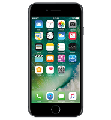
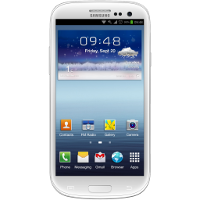
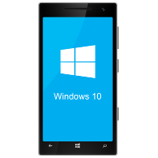

PhoneMart
Dear User! Welcome to PhoneMart.
The one and only online store for cell phone deals. We deal in all kinds of phones
for our customers and provide the best possible choice according to their need by fully satisfying them with our level of transperency in deal acquisition.
As the market of cell phones have increase with the passage of time, we tried out best to cope up with it and uptill now we have managed to maintain a level of its quality and provide the best deals for our users.
Our History
According to our recently taken statistics, we have found out that the page itself had 11 billion page views, 200 million monthly active users, 25 million listings,
and 8.5 million transactions per month. The company invested heavily in mobile phone advertising because the adoption of the internet by more than three billion people has made mobile phone more effective
as a driver of traffic to websites or apps than it was during the early dot-com period.
Cell Phone Categories
Iphones

We deal in iphones as iphone considered to be the status symbol from the time it has been launched. So, many people
get attracted to iphone deals as well and they try to find out the most cost effective deal according to their price range.
The first-generation iPhone can run iPhone OS 3.1.3, the iPhone 3G can run iOS 4.2.1, and the iPhone 3GS can run iOS 6.1.6.
The iPhone 5 and later can run the newest version of iOS, iOS 10. Similarly the specifications of the iphone have been divided
into generations as well. The newest generation of iphone now uses a Dual or Quadcore processor with 1 or 1.5gb of Ram and 32/64/128/256gb Rom.
Android Phones

We deal in android mobiles as it is considered to be the biggest revolution in the history of wireless communication devices.
Android has literally took over the market by storm as most of the international and local brands are moving towards android operating system and their top priority is to release
their latest mobile phone with a latest android OS. Android phones are highly customisable, so they can be altered to suit your personal tastes and needs. For instance,
you can set your own wallpaper, themes and launchers, which completely change the look of your device's interface. You can download new applications to do all sorts of things
like check your Facebook and Twitter feeds, manage your bank account, order pizza and play games.
Windows Phones

We deal in windows phones as these mobile phones are considered to be the business type phones. Windows Phone (WP) is a family of mobile
operating systems developed by Microsoft for smartphones as the replacement successor to Windows Mobile. At their start in the market the most of the windows phone were launched by Nokia
according to their partnership with WP. Windows mobile operating system has also worked on its updates and to give the user a better experience in their each version of WP. Several features
of Windows Phone are organized into "hubs", which combine local and online content via Windows Phone's integration with popular social networks such as Facebook, Windows Live, and Twitter.